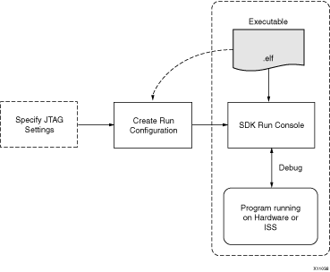

Build configurations
Debug configurations
JTAG settings
Debug perspective
Advanced debug concepts
With the SDK debugger, you can see what is happening to a program while it executes. You can set breakpoints or watchpoints to stop the processor, step through program execution, view the program variables and stack, and view the contents of the memory in the system. The SDK debugger uses the GNU Debugger (GDB) with Xilinx® Microprocessor Debugger (XMD) as the underlying debug engine. It translates each user interface action into a sequence of GDB commands and processes the output from GDB to display the current state of the program being debugged. It communicates to the processor on the hardware and ISS target using XMD.
The debug workflow is described in the following diagram:

The workflow is made up of the following components:
You can repeat the cycle of modifying the code, building the executable, and debugging the program in SDK.
Note: If you edit the source after compiling, the line numbering will be out of step because the debug information is tied directly to the source. Similarly, debugging optimized binaries can also cause unexpected jumps in the execution trace.
You can debug the application on a processor target running on a hardware board or Instruction Set Simulator (ISS). The following sections explain the different debug targets supported by SDK.
SDK provides Cycle-Accurate Instruction Set Simulators (ISS) for all processor targets: MicroBlaze™, PowerPC® 405, and PowerPC 440 processors. These simulators model the processor block and local memory but not the peripherals in the system. Use these simulators if you do not have a hardware board and want to debug a program that does not require a peripheral interface.
SDK supports debugging of a program on processor running on a FPGA. All processor architectures (MicroBlaze, PowerPC 405, and PowerPC 440 processors) are supported. SDK communicates to the processor on the FPGA over the JTAG interface using the Xilinx JTAG cable. Before you debug the processor on the FPGA, you should configure the FPGA with the appropriate system bitstream. Refer to Xilinx embedded hardware for more information.
The debug logic for each processor enables program debugging by controlling the processor execution. The debug logic on hard PowerPC processor cores is built in and always available for debugging. However, the debug logic on soft MicroBlaze processor cores is configurable and can be enabled or disabled by the hardware designer when building the embedded hardware.
Enabling the debug logic on MicroBlaze processors provides advanced debugging capabilities such as hardware breakpoints, read/write memory watchpoints, safe-mode debugging, and more visibility into MicroBlaze processors. This is the recommended method of debugging MicroBlaze software. If the debug logic is disabled on the hardware, you can debug programs using XMDStub (a ROM monitor). XMDStub is a small debug stub that runs on MicroBlaze processors and can perform basic debug operations like reading and writing memory and register values and controlling the program execution. It should be initialized to the processor local memory at the reset location, so when the processor resets, the XMDStub is run and ready for debugging. It communicates to SDK over a Universal Asynchronous Receiver-Transmitter (UART), which could be JTAG-based or RS232-based.

Build configurations
Debug configurations
JTAG settings
Debug perspective
Advanced debug concepts
Copyright © 1995-2009 Xilinx, Inc. All rights reserved.